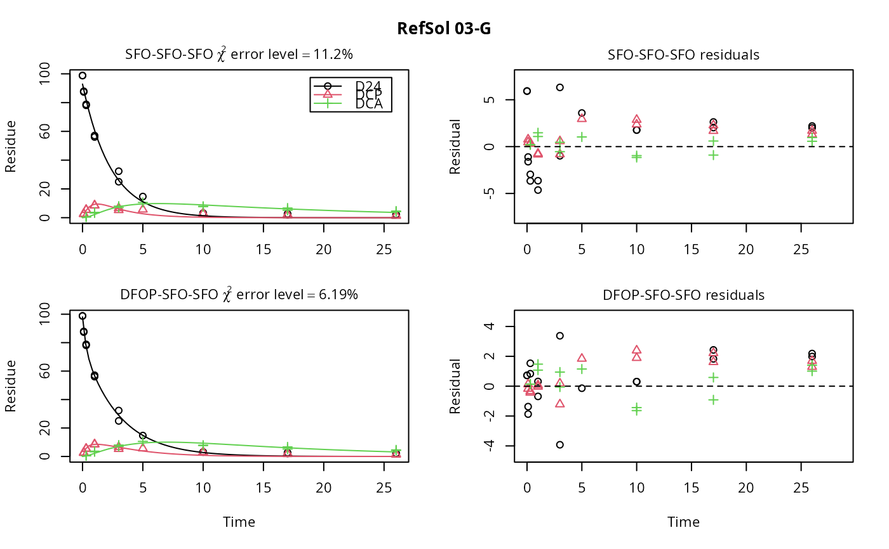

Aerobic soil degradation data on 2,4-D from the EU assessment in 2014
Source:R/D24_2014.R
D24_2014.RdThe five datasets were extracted from the active substance evaluation dossier published by EFSA. Kinetic evaluations shown for these datasets are intended to illustrate and advance kinetic modelling. The fact that these data and some results are shown here does not imply a license to use them in the context of pesticide registrations, as the use of the data may be constrained by data protection regulations.
Format
An mkindsg object grouping five datasets
Source
Hellenic Ministry of Rural Development and Agriculture (2014) Final addendum to the Renewal Assessment Report - public version - 2,4-D Volume 3 Annex B.8 Fate and behaviour in the environment https://open.efsa.europa.eu/study-inventory/EFSA-Q-2013-00811
Details
Data for the first dataset are from p. 685. Data for the other four datasets were used in the preprocessed versions given in the kinetics section (p. 761ff.), with the exception of residues smaller than 1 for DCP in the soil from Site I2, where the values given on p. 694 were used.
The R code used to create this data object is installed with this package in the 'dataset_generation' directory. In the code, page numbers are given for specific pieces of information in the comments.
Examples
print(D24_2014)
#> <mkindsg> holding 5 mkinds objects
#> Title $title: Aerobic soil degradation data on 2,4-D from the EU assessment in 2014
#> Occurrence of observed compounds $observed_n:
#> D24 DCP DCA
#> 5 4 4
#> Time normalisation factors $f_time_norm:
#> [1] 1.6062378 0.7118732 0.7156063 0.7156063 0.8977124
#> Meta information $meta:
#> study usda_soil_type study_moisture_ref_type
#> Mississippi Cohen 1991 Silt loam <NA>
#> Fayette Liu and Adelfinskaya 2011 Silt loam pF1
#> RefSol 03-G Liu and Adelfinskaya 2011 Loam pF1
#> Site E1 Liu and Adelfinskaya 2011 Loam pF1
#> Site I2 Liu and Adelfinskaya 2011 Loamy sand pF1
#> rel_moisture temperature
#> Mississippi NA 25
#> Fayette 0.5 20
#> RefSol 03-G 0.5 20
#> Site E1 0.5 20
#> Site I2 0.5 20
# \dontrun{
print(D24_2014$ds[[1]], data = TRUE)
#> <mkinds> with $title: Mississippi
#> Observed compounds $observed: D24
#> Sampling times $sampling_times:
#> 0, 2, 4, 7, 15, 24, 35, 56, 71, 114, 183, 273, 365
#> With a maximum of 1 replicates
#> time D24
#> 1 0 96.8
#> 2 2 81.0
#> 3 4 81.7
#> 4 7 88.2
#> 5 15 66.3
#> 6 24 72.9
#> 7 35 62.6
#> 8 56 54.6
#> 9 71 35.2
#> 10 114 18.0
#> 11 183 11.3
#> 12 273 9.9
#> 13 365 6.3
m_D24 = mkinmod(D24 = mkinsub("SFO", to = "DCP"),
DCP = mkinsub("SFO", to = "DCA"),
DCA = mkinsub("SFO"))
#> Temporary DLL for differentials generated and loaded
print(m_D24)
#> <mkinmod> model generated with
#> Use of formation fractions $use_of_ff: max
#> Specification $spec:
#> $D24
#> $type: SFO; $to: DCP; $sink: TRUE
#> $DCP
#> $type: SFO; $to: DCA; $sink: TRUE
#> $DCA
#> $type: SFO; $sink: TRUE
#> Coefficient matrix $coefmat available
#> Compiled model $cf available
#> Differential equations:
#> d_D24/dt = - k_D24 * D24
#> d_DCP/dt = + f_D24_to_DCP * k_D24 * D24 - k_DCP * DCP
#> d_DCA/dt = + f_DCP_to_DCA * k_DCP * DCP - k_DCA * DCA
m_D24_2 = mkinmod(D24 = mkinsub("DFOP", to = "DCP"),
DCP = mkinsub("SFO", to = "DCA"),
DCA = mkinsub("SFO"))
#> Temporary DLL for differentials generated and loaded
print(m_D24_2)
#> <mkinmod> model generated with
#> Use of formation fractions $use_of_ff: max
#> Specification $spec:
#> $D24
#> $type: DFOP; $to: DCP; $sink: TRUE
#> $DCP
#> $type: SFO; $to: DCA; $sink: TRUE
#> $DCA
#> $type: SFO; $sink: TRUE
#> Compiled model $cf available
#> Differential equations:
#> d_D24/dt = - ((k1 * g * exp(-k1 * time) + k2 * (1 - g) * exp(-k2 *
#> time)) / (g * exp(-k1 * time) + (1 - g) * exp(-k2 * time)))
#> * D24
#> d_DCP/dt = + f_D24_to_DCP * ((k1 * g * exp(-k1 * time) + k2 * (1 - g) *
#> exp(-k2 * time)) / (g * exp(-k1 * time) + (1 - g) * exp(-k2
#> * time))) * D24 - k_DCP * DCP
#> d_DCA/dt = + f_DCP_to_DCA * k_DCP * DCP - k_DCA * DCA
D24_2014_data <- lapply(D24_2014$ds, function(x) x$data)
names(D24_2014_data) <- sapply(D24_2014$ds, function(x) x$title)
f_D24_2014 <- mmkin(
models = list(
"SFO-SFO-SFO" = m_D24,
"DFOP-SFO-SFO" = m_D24_2),
data = D24_2014_data,
quiet = TRUE)
print(f_D24_2014)
#> <mmkin> object
#> Status of individual fits:
#>
#> dataset
#> model Mississippi Fayette RefSol 03-G Site E1 Site I2
#> SFO-SFO-SFO OK Z Z Z Z
#> DFOP-SFO-SFO OK Z Z Z Z
#>
#> Z: Observations with value of zero were removed from the data
#> OK: No warnings
plot(f_D24_2014[, 3])

# }